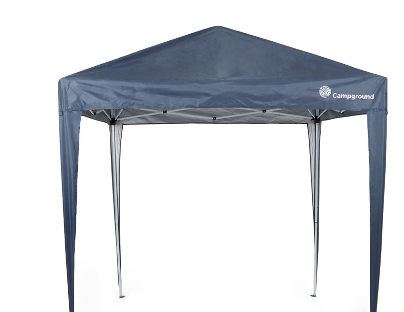
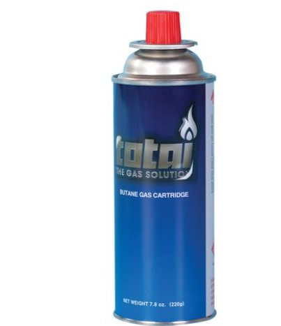
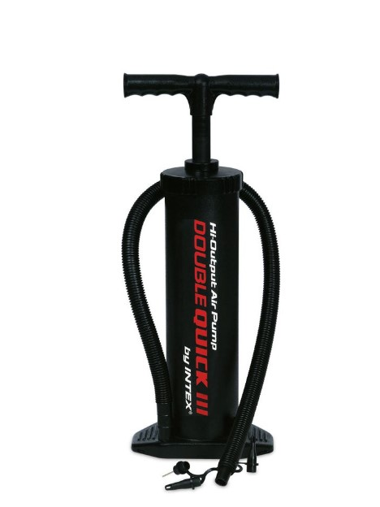
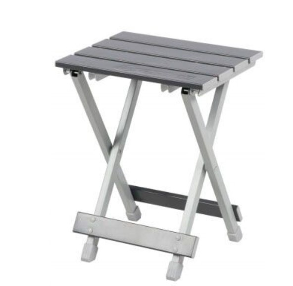
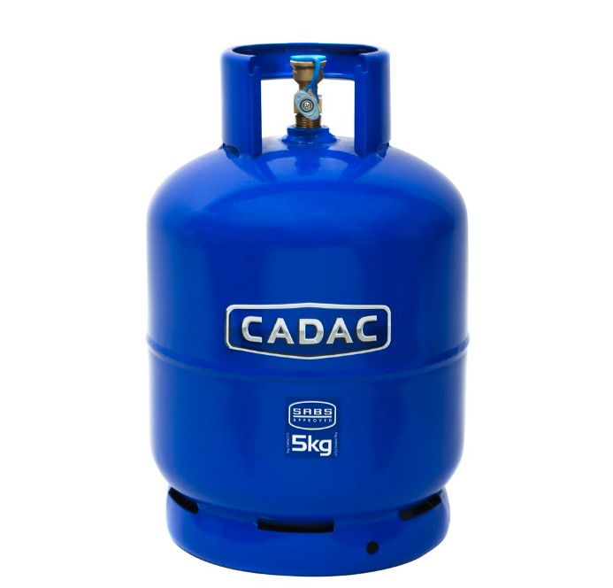

-

Campground 3 x 3m Gazebo
Campground 3 x 3m Gazebo Strong and sturdy in their construction, the Campground 3 x 3m Gazebo makes an excellent focal point in your garden. It is ideal for sitting, dining, and relaxing under during those hot sunny days or just sheltering from the occasional downpour. Easy to transport and take on your outdoor adventures. Features: - Tough, durable, and easy to set up - Portable shade for camping or at the beach - Carry bag included.
Price: R 1,299
Stock: 10
-

Totai - 220g Totai Cannister
Feature: - Butane Cannister - Suitable for use with Totai Cartridge stove and lever head blowtorch - 30mm - Suitable for indoor and outdoor use What's in the box 1 X 220g Canister
Price: R 109
Stock: 5
-

Intex - 48cm High Output PI Hand Pump - Black
This manual pump is easy to use, easy to store and easy to take with you anywhere. Features: - TUV NORD approved - Inflates on both up and down strokes - Comes with 3 sized nozzles - Comes in a shelf box for storage - Manual High-out pump and it takes 8 Psi (Pound Force Per Square Inch) Specifications: - Dimensions: 48 x 20 x 12cm - Weight: 1.37kg What's in the box x 1 Intex - 48cm High Output PI Hand Pump - Black
Price: R 149
Stock: 0
-

OZtrail - Aluminium Fold-Up Stool - Silver
OZtrail - Aluminium Fold-Up Stool - Silver Oztrail Aluminium Folding Stool is perfect for any occasion. Sturdy and compact aluminium frame. Use for camping, fishing, sporting event or just around the garden while having a braai. What's in the box: x 1 Aluminium fold-up stool .
Price: R 405
Stock: 15
-

Cadac Gas Cylinder - 5kg
The Cadac 5kg gas cylinder is coated with epoxy powder for rust protection which features an external valve with fingertip control and a dust cover plug. It's essential for any camping trip. The cylinder is suitable for cooker tops, lamps and heaters. Features: - External Valve System - Fingertip control - The cylinder has a capped shroud for protection of valve with carry handle on shroud - The cylinder is suitable for cooker tops, lamps and heaters - Includes a dust cap - Does not include gas
Price: R 669
Stock: 20
{kind=link}